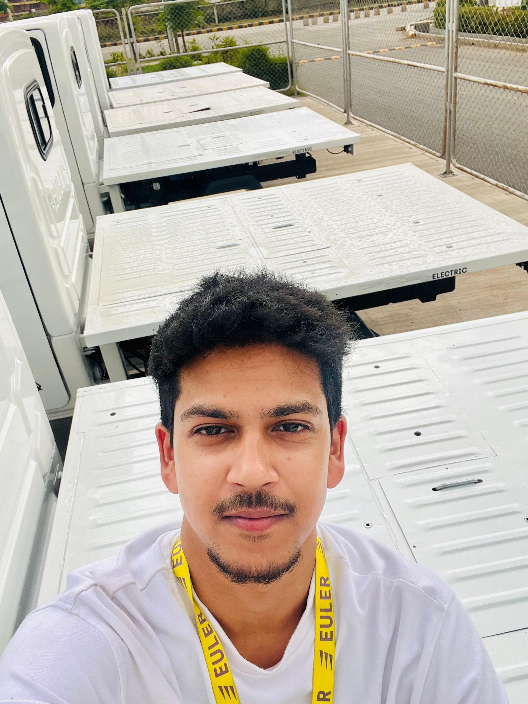

Ujjwal
Kashyap
Filmmaker
& Growth Marketer
01

About me
I’m a commercial filmmaker and growth marketer bringing visual craft and business thinking together. With an MBA in Marketing & Supply Chain, I work across the full creative journey: concept, shoot, edit, distribution, and learning.
- Creative strategy
- Brand storytelling
- Meta Ads & UGC
- Video production

My creative
philosophy
The strongest brand stories feel human first. I pair a thoughtful visual point of view with a clear reason for every frame.
Creative workflow
& production process

Brief, audience, goals

Find the human angle

Capture real moments

Edit, shape, adapt

Publish and learn
Skills & expertise


Brand stories
in the wild
Campaigns built around real products and the people behind them. For IG International, I created social content across sourcing, cold-chain operations, and retail.
SnapNear
local discovery
A platform connecting clients with verified local photographers within 5 km for portraits, couple shoots, and events.
- Built around nearby discovery
- Direct connection with photographers
- Designed for local creative needs

A story shared
by AB de Villiers
A video featured on the cricket icon’s official Instagram story—proof that a thoughtful edit can travel far beyond its original audience.
- Sound-led storytelling
- Dynamic cuts and pacing
- Global organic distribution

Build, learn,
make better work.
From commercial field shoots to independent products, I keep learning how creative craft and clear strategy can work together.
- 100+ creative assets
- 50+ reels produced
- MBA · Marketing & Supply Chain
- Performance marketing certified


CONTACT
NOW